소개
iOS 앱 개발시 Kakao 지도 iOS API 를 사용하면 앱 내에 지도를 만들 수 있습니다. 웹에서 사용하는 Javascript API와는 달리 Native 수준에서 동작하기 때문에 iOS용 앱과 더욱 긴밀하게 동작이 가능합니다.
준비 사항
Kakao 지도 iOS API 를 사용하기 전에 준비해야 할 사항에 대해 설명합니다.
이 가이드는 Xcode 버전 10.0 대상으로 진행합니다.
SDK 다운로드
최신 버전 (2019/11/22)
네이티브 앱 키 발급 및 Bundle ID 등록하기
Kakao 지도 iOS API 는 Bundle ID 를 등록해야만 사용 가능합니다.
이를 위해서는 카카오 계정이 필요합니다.
Bundle ID 등록을 위해서는 아래 과정이 필요합니다.
1. 카카오 개발자사이트 (https://developers.kakao.com) 접속
2. 개발자 등록 및 앱 생성
3. IOS 플랫폼 추가: 앱 선택 – [플랫폼] – [iOS 플랫폼 등록] – 번들ID(필수) 등록
4. 페이지 상단의 [네이티브 앱 키]와 등록한 [번들 ID]를 사용합니다.
iOS앱의 Bundle ID 는 Info.plist 파일의 Bundle Identifier 프로퍼티에 설정됩니다. [[NSBundle mainBundle] bundleIdentifier] 메소드를 이용하여 Bundle Id 를 확인할 수 있습니다.
등록된 Bundle ID 와 일치하는 앱에서만 지도 API를 사용할 수 있기 때문에 반드시 등록해주세요.
그리고 Info.plist 파일에 다음과 같은 항목으로 앞 단계에서 발급 받은 APP KEY 를 설정 합니다.
- Key name: KAKAO_APP_KEY
- Value Type : String
- Value : 발급 받은 APP KEY
왼쪽 메뉴의 열쇠모양 을 클릭하면 내 애플리케이션 로 이동합니다. 아직 Bundle ID 를 등록하지 않았다면 해당 페이지에 접속하여 등록하세요.
라이브러리 파일 추가
SDK 를 다운받아서 압축을 풀고 DaumMap.embeddedframework 폴더를 애플리케이션 프로젝트로 복사 합니다.
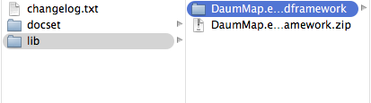
복사한 DaumMap.embeddedframework 폴더 전체를 프로젝트에 추가 합니다.
Add Files to “프로젝트명” 을 클릭합니다. 또는 Finder에서 폴더를 Xcode 프로젝트 내의 Framework 그룹으로 Drag 합니다.
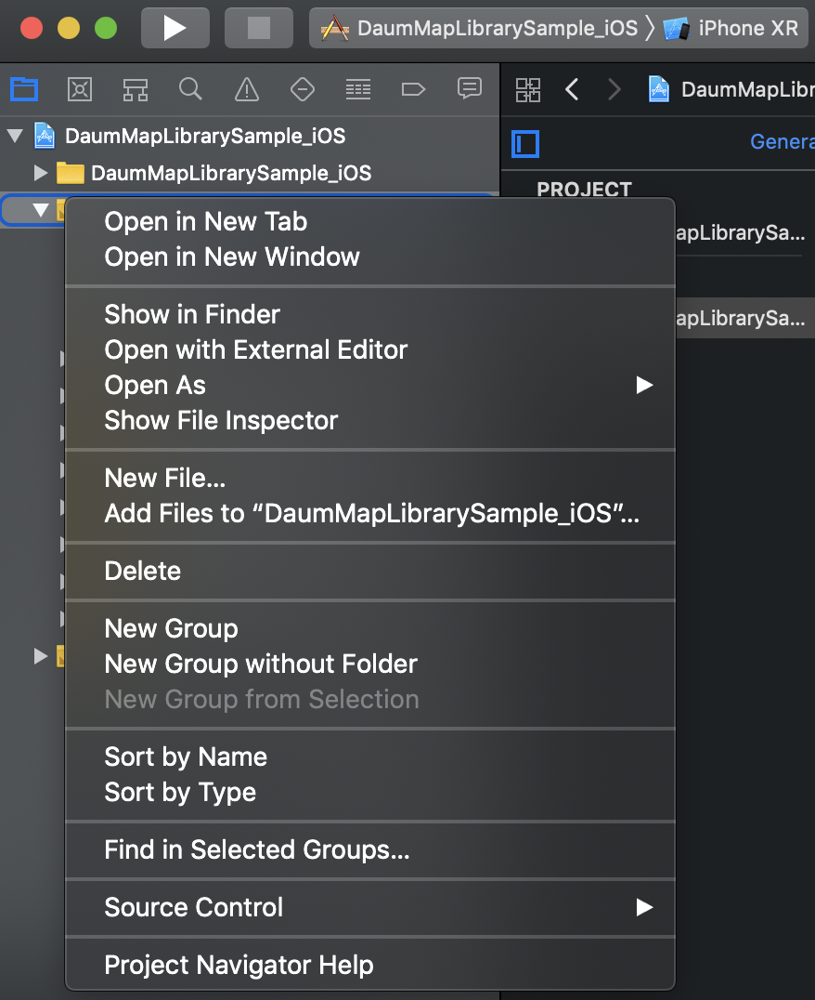
Create groups for any added folders 항목과 추가하고자 하는 Target 에 체크가 되어 있는지 확인 해야 합니다.
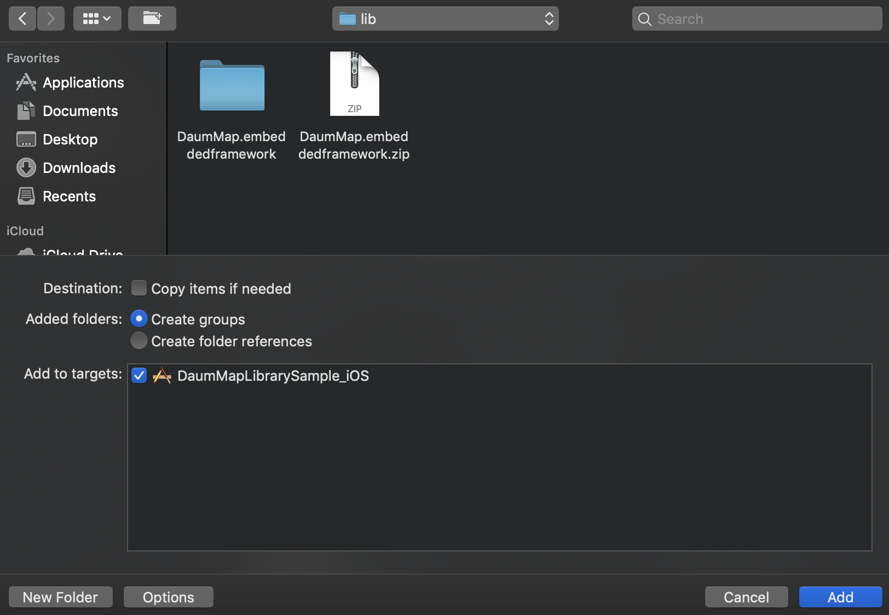
프로젝트의 Target은 DaumMap Framework가 사용하는 Framework들을 추가 해야 합니다.
- OpenGLES.framework
- SystemConfigure.framework
- CoreLocation.framework
- QuartzCore.framework
- libc++.tbd
- libxml2.tbd
- libsqlite3.tbd
추가하고자 하는 Target 설정 에서 General 또는 Build Phases 탭의 Link Binary With Libraries 항목 하단에 나타나는 + 버튼을 이용하여 Framework들을 추가합니다.

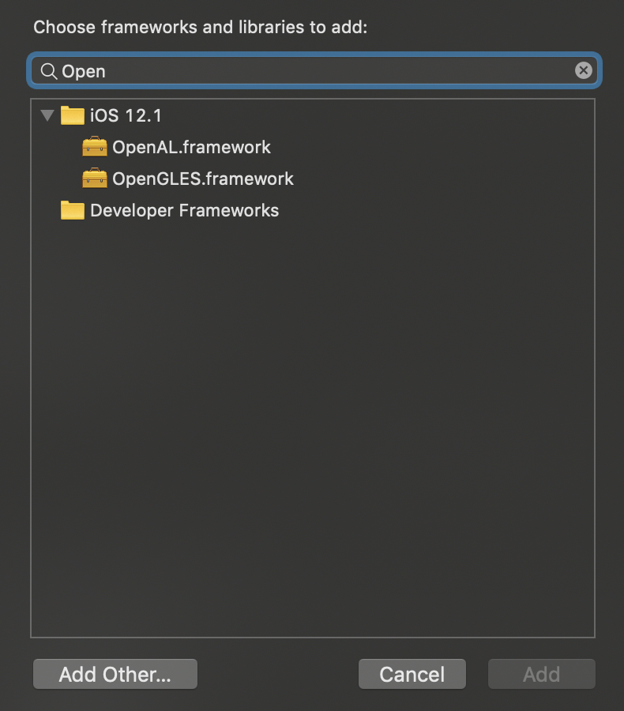
현재 Map용 SDK 는 Automatic Reference Counting(ARC) 을 지원하지 않습니다. 따라서 작업할 때 ARC 를 NO 로 해주시기 바랍니다.
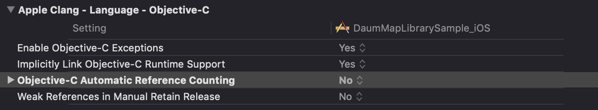
소스 코드
Kakao 지도 iOS API 에서는 클래스명 앞에 모두 MT 라는 prefix 가 붙습니다. 여기서 MT 는 Mobile Toolkit 를 의미하며, Kakao의 모바일 라이브러리 표준 네이밍 입니다.
더욱 자세한 내용은 Sample APP 을 통해 확인 가능합니다.
MTMapView 구현
지도에서 발생하는 각종 이벤트들을 통보받기 위해서는 MTMapViewDelegate protocol을 구현하는 객체를 MTMapView 의 delegate 프로퍼티에 등록 해 주어야 합니다.
baseMapType 프로퍼티를 이용하여 지도 종류를 선택할 수 있습니다.
지도 종류는 기본 지도(MTMapTypeStandard) , 위성 지도(MTMapTypeSatellite) , 하이브리드 지도(MTMapTypeHybrid) 가 제공됩니다.
아래 예제는 UIViewController 를 구현하는 클래스의 viewDidLoad 메소드에서 MTMapView 객체를 생성하고 하이브리드 지도를 보여주도록 설정한 예제입니다.
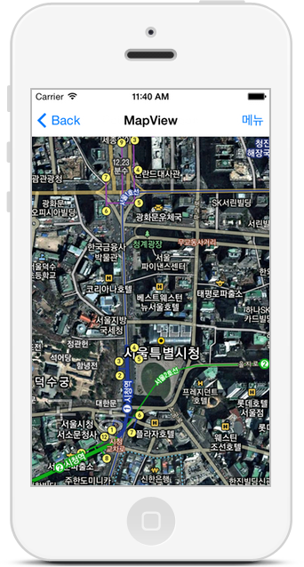
#import <DaumMap/MTMapView.h>
- (void)viewDidLoad {
[super viewDidLoad];
_mapView = [[MTMapView alloc] initWithFrame:CGRectMake(0, 0, self.view.frame.size.width, self.view.frame.size.height)];
_mapView.delegate = self;
_mapView.baseMapType = MTMapTypeHybrid;
[self.view addSubview:_mapView];
}지도 중심점, 레벨 변경(Zoom)
MTMapView 클래스가 제공하는 메소드를 이용하여 손쉽게 지도 중심점 과 지도 확대/축소 레벨 을 변경할 수 있습니다.
#import <DaumMap/MTMapView.h>
// Move To
[_mapView setMapCenterPoint:[MTMapPoint mapPointWithGeoCoord:MTMapPointGeoMake(37.53737528, 127.00557633)] animated:YES];
// Zoom To
[_mapView setZoomLevel:4 animated:YES];
// Move and Zoom to
[_mapView setMapCenterPoint:[MTMapPoint mapPointWithGeoCoord:MTMapPointGeoMake(33.41, 126.52)] zoomLevel:9 animated:YES];마커 추가 및 이벤트 처리
지도 위에 마커를 표시하기 위해서는 MTMapPOIItem 객체를 생성하여 MTMapView 객체에 등록해 주어야 합니다.
기본 제공되는 Pin 타입의 POI Item 을 추가할 수도 있고, 개발자가 지정하는 이미지 가 표시되도록 설정할 수 있습니다. 사용자가 손으로 끌어서 위치를 변경할 수 있는 Draggable POI Item 을 생성할 수도 있습니다.
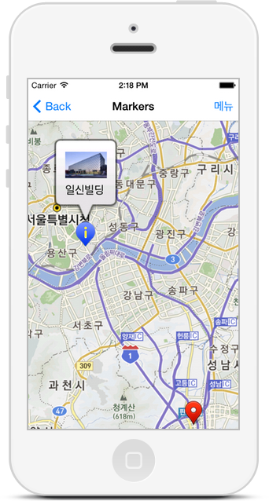
#import <DaumMap/MTMapView.h>
MTMapPOIItem* poiItem1 = [MTMapPOIItem poiItem];
poiItem1.itemName = @"City on a Hill";
poiItem1.mapPoint = [MTMapPoint mapPointWithGeoCoord:MTMapPointGeoMake(37.541889,127.095388)];
poiItem1.markerType = MTMapPOIItemMarkerTypeBluePin;
poiItem1.showAnimationType = MTMapPOIItemShowAnimationTypeDropFromHeaven;
poiItem1.draggable = YES;
poiItem1.tag = 153;
MTMapPOIItem *poiItem2 = [MTMapPOIItem poiItem];
poiItem2.itemName = @"다음커뮤니케이션";
poiItem2.markerType = MTMapPOIItemMarkerTypeCustomImage;
poiItem2.customImageName = @"map_pin_custom.png";
poiItem2.mapPoint = [MTMapPoint mapPointWithGeoCoord:MTMapPointGeoMake(37.537229,127.005515)];
poiItem2.showAnimationType = MTMapPOIItemShowAnimationTypeSpringFromGround;
poiItem2.customImageName = @"custom_poi_marker.png";
poiItem2.markerSelectedType = MTMapPOIItemMarkerSelectedTypeCustomImage;
poiItem2.customSelectedImageName = @"custom_poi_marker_selected.png";
poiItem2.customImageAnchorPointOffset = MTMapImageOffsetMake(30,0);
UIView *customCalloutBalloonViewIlshinBuilding = [[[NSBundle mainBundle] loadNibNamed:@"CustomCalloutBalloonView_IlshinBuilding" owner:self options:nil] lastObject];
poiItem.customCalloutBalloonView = customCalloutBalloonViewIlshinBuilding;
[_mapView addPOIItems:[NSArray arrayWithObjects:poiItem1, poiItem2, nil]];
[_mapView fitMapViewAreaToShowAllPOIItems];선(Polyline) 그리기
MTMapPolyline 객체를 생성하고 MTMapView 객체에 등록하여 지도 위에 선을 그릴 수 있습니다. Polyline을 구성하는 점들을 지정 하고, 선 색상 을 지정할 수 있습니다.
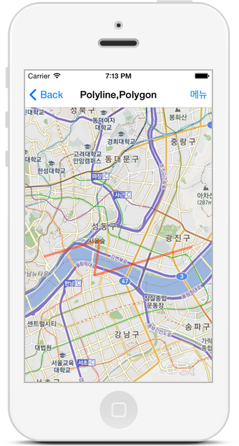
MTMapPolyline * polyline = [MTMapPolyline polyLine];
polyline.tag = 2000;
polyline.lineColor = [UIColor colorWithRed:0.0f green:0.0f blue:1.0f alpha:0.8f];
[polyline addPoints:[NSArray arrayWithObjects:
[MTMapPoint mapPointWithWCONG:MTMapPointPlainMake(475334.0,1101210.0)],
[MTMapPoint mapPointWithWCONG:MTMapPointPlainMake(474300.0,1104123.0)],
...
[MTMapPoint mapPointWithWCONG:MTMapPointPlainMake(485016.0,1118034.0)],
nil]];
[_mapView addPolyline:polyline];
[_mapView fitMapViewAreaToShowPolyline:polyline];원(Circle) 그리기
MTMapCircle 객체를 생성하고 MTMapView 객체에 등록하여 지도 위에 원을 그릴 수 있습니다. Circle의 범위 와 색 을 지정할 수 있습니다.
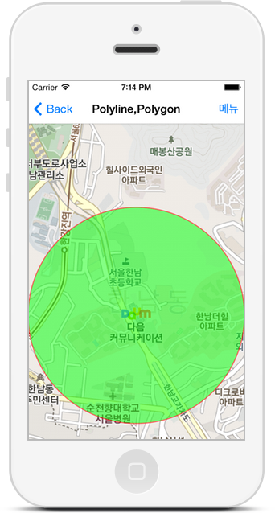
MTMapCircle *circle = [MTMapCircle circle];
circle.circleCenterPoint = [MTMapPoint mapPointWithGeoCoord:MTMapPointGeoMake(37.537094, 127.005470)];
circle.circleLineColor = [UIColor colorWithRed:1 green:0 blue:0 alpha:0.5];
circle.circleFillColor = [UIColor colorWithRed:0 green:1 blue:0 alpha:0.5];
circle.tag = 1234;
circle.circleRadius = 500;
[mapView addCircle:circle];
[mapView fitMapViewAreaToShowCircle:circle];현위치 트래킹 모드, 나침반 모드
단말기의 현재 위치에 따라 지도화면이 이동하도록 하는 현위치 관련 기능을 손쉽게 사용할 수 있습니다.
- 현위치 트래킹 모드 : 지도화면 중심을 단말의 현재 위치로 이동시켜줌
- 나침반 모드 : 단말의 방향에 따라 지도화면이 회전됨
현위치 트래킹 모드 만 On시키거나 현위치 트래킹 모드 , 나침반 모드 둘 다 On 시킬 수 있습니다. 현위치 트래킹/나침반 모드 를 활성화 시키면 현위치 정보(현위치 좌표, 정확도, 단말 방향 각도)가 MTMapView 객체에 등록된 MTMapViewDelegate 객체에 전달됩니다.
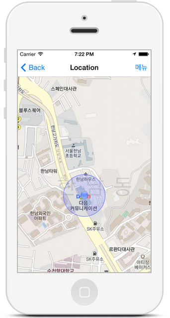
현위치 트래킹 및 나침반 모드 설정
- (void)mapView:(MTMapView*)mapView updateCurrentLocation:(MTMapPoint*)location withAccuracy:(MTMapLocationAccuracy)accuracy {
MTMapPointGeo currentLocationPointGeo = location.mapPointGeo;
NSLog(@"MTMapView updateCurrentLocation (%f,%f) accuracy (%f)",
currentLocationPointGeo.latitude,
currentLocationPointGeo.longitude,
accuracy);
}
- (void)mapView:(MTMapView*)mapView updateDeviceHeading:(MTMapRotationAngle)headingAngle {
NSLog(@"MTMapView updateDeviceHeading (%f) degrees", headingAngle);
}현위치 이벤트 처리(MapView Delegate)
@Override
- (void)mapView:(MTMapView*)mapView updateCurrentLocation:(MTMapPoint*)location withAccuracy:(MTMapLocationAccuracy)accuracy {
MTMapPointGeo currentLocationPointGeo = location.mapPointGeo;
NSLog(@"MTMapView updateCurrentLocation (%f,%f) accuracy (%f)",
currentLocationPointGeo.latitude, currentLocationPointGeo.longitude, accuracy);
}
- (void)mapView:(MTMapView*)mapView updateDeviceHeading:(MTMapRotationAngle)headingAngle {
NSLog(@"MTMapView updateDeviceHeading (%f) degrees", headingAngle);
}Reverse Geo-Coding
MTMapReverseGeoCoder 클래스를 이용하여 지도 좌표를 주소 정보로 변환 할 수 있습니다. 주소 정보 변환은 Kakao에서 운영하는 Reverse Geo-Coding 웹 서비스 를 통하여 이루어집니다.
주소 정보 변환 API 는 비동기(Asynchronous) 방식과 동기(Synchronous, Blocking) 방식이 제공됩니다.
비동기 방식 은 Reverse Geo-coding 결과를 통보받을 수 있는 MTMapReverseGeoCoderDelegate protocol을 구현한 delegate 객체를 MTMapReverseGeoCoder 객체에 설정하여 비동기적으로 결과를 통보받을 수 있습니다.
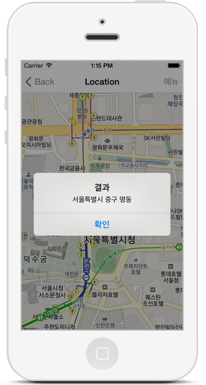
...
MTMapReverseGeoCoder* reverseGeoCoder = [[[MTMapReverseGeoCoder alloc] initWithMapPoint:MTMapPointGeoMake(37.537229,127.005515)
withDelegate:self] autorelease];
MTMapReverseGeoCoder* reverseGeoCoder = [[[MTMapReverseGeoCoder alloc] initWithMapPoint:MTMapPointGeoMake(37.537229,127.005515)
withDelegate:self withOpenAPIKey:@"DAUM_LOCAL_DEMO_APIKEY"] autorelease];
self.reverseGeoCoder = reverseGeoCoder; // retain
[reverseGeoCoder startFindingAddress];
...
- (void)MTMapReverseGeoCoder:(MTMapReverseGeoCoder*)rGeoCoder foundAddress:(NSString*)addressString {
NSLog(@"Address = [%@]", addressString);
self.reverseGeoCoder = nil;
}
- (void)MTMapReverseGeoCoder:(MTMapReverseGeoCoder*)rGeoCoder failedToFindAddressWithError:(NSError*)error {
...
self.reverseGeoCoder = nil;
}동기 방식은 MapReverseGeoCoder.findAddressForMapPoint static 메소드를 호출하면 실행중인 Thread에서 바로 주소정보를 리턴 받을 수 있습니다.
NSString* address = [MTMapReverseGeoCoder findAddressForMapPoint:MTMapPointGeoMake(37.537229,127.005515)
withOpenAPIKey:@"DAUM_LOCAL_DEMO_APIKEY"];지도 화면 이동 및 축소/확대
MTMapCameraUpdate 클래스를 이용하여 지도 화면의 위치 이동 과 축소/확대 가 가능합니다.
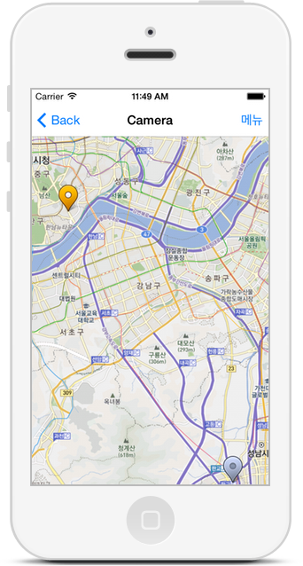
MTMapPoint *mapPoint1 = [MTMapPoint mapPointWithGeoCoord:MTMapPointGeoMake(37.537229, 127.005515)];
MTMapPoint *mapPoint2 = [MTMapPoint mapPointWithGeoCoord:MTMapPointGeoMake(37.4020737, 127.1086766)];
MTMapBounds mapBounds= MTMapBoundsMake(mapPoint1, mapPoint2);
MTMapCameraUpdate *camera = [MTMapCameraUpdate fitMapView:mapBounds
withPadding:100
withMinZoomLevel:3
withMaxZoomLevel:7];
[mapView animateWithCameraUpdate:camera];지도앱 URL Scheme
개발중인 App or Web 에서 Kakao 지도앱으로 연결하고 싶으신 경우에는 다음과 같은 URL Scheme을 이용하시면 됩니다.
지도앱 열기
| 지도앱 버전 | OS 버전 | URL Scheme | 설명 |
|---|---|---|---|
| 4.0.0 + | 10.0 + | kakaomap://open | 지도앱을 실행합니다. |
| 4.0.0 + | 10.0 + | kakaomap://open?page=placeSearch | 지도앱을 실행하고 장소 검색 입력 화면 을 보여줍니다. |
| 4.0.0 + | 10.0 + | kakaomap://open?page=routeSearch | 지도앱을 실행하고 길찾기 입력 화면 을 보여줍니다. |
좌표로 이동
| 지도앱 버전 | OS 버전 | URL Scheme | 설명 |
|---|---|---|---|
| 4.0.0 + | 10.0 + | kakaomap://look?p=37.537229,127.005515 | 지도앱을 실행하고 지정된 좌표 중심으로 지도를 보여주고 마커를 표시합니다. |
장소로 이동
| 지도앱 버전 | OS 버전 | URL Scheme | 설명 |
|---|---|---|---|
| 4.0.0 + | 10.0 + | kakaomap://place?id=7813422 | 지도앱을 실행하고 지정(장소ID)된 장소를 중심으로 지도를 보여주고 마커를 표시합니다. |
검색하기
| 지도앱 버전 | OS 버전 | URL Scheme | 설명 |
|---|---|---|---|
| 4.0.0 + | 10.0 + | kakaomap://search?q=맛집&p=37.537229,127.005515 | 지도앱을 실행하고 지정된 좌표(WGS84) 중심으로 검색합니다. |
길찾기
| 지도앱 버전 | OS 버전 | URL Scheme | 설명 |
|---|---|---|---|
| 4.0.0 + | 10.0 + | kakaomap://route?sp=37.537229,127.005515&ep=37.4979502,127.0276368&by=CAR | 지도앱을 실행하고 출발지 좌표(WGS84)부터 도착지 좌표(WGS84)까지 자동차 길찾기합니다. |
| 4.0.0 + | 10.0 + | kakaomap://route?sp=37.537229,127.005515&ep=37.4979502,127.0276368&by=PUBLICTRANSIT | 지도앱을 실행하고 출발지 좌표(WGS84)부터 도착지 좌표(WGS84)까지 대중교통 길찾기합니다. |
| 4.0.0 + | 10.0 + | kakaomap://route?sp=37.537229,127.005515&ep=37.4979502,127.0276368&by=FOOT | 지도앱을 실행하고 출발지 좌표(WGS84)부터 도착지 좌표(WGS84)까지 도보 길찾기합니다. |
로드뷰 마커 보기
| 지도앱 버전 | OS 버전 | URL Scheme | 설명 |
|---|---|---|---|
| 4.0.0 + | 10.0 + | kakaomap://roadView?p=37.537229,127.005515 | 지도앱을 실행하고 지정된 좌표(WGS84)의 로드뷰 마커 를 보여줍니다. |
예외처리
- kakaomap:// 스킴을 인식하지 못하는 경우 앱스토어 다음 지도 앱 페이지 로 연결해 앱 설치를 유도합니다.
- kakaomap:// 스킴은 인식하지만 지원하지 않는 액션인 경우 지도앱 열기 와 동일하게 처리합니다.
더 살펴보기
Kakao 지도 iOS API 를 시작하는 방법과 기능에 대해 간략하게 소개해 보았습니다. 여러분의 멋진 애플리케이션을 위해서 더 자세한 API의 기능들을 살펴보세요.
- API를 응용한 예제는 Sample 페이지 에서 다운받아 실행해 볼 수 있습니다.
- API의 기능에 대해 상세히 알기 원한다면 Documentation 페이지 를 참고해 주세요.
- 어렵고 복잡한가요? 개발자 포럼 을 방문하세요. 그리고 질문하세요. 여러분과 같은 고민을 하는 개발자를 만나 도움을 얻을 수도 있습니다.